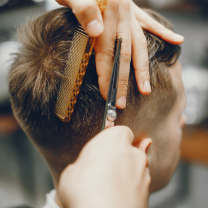
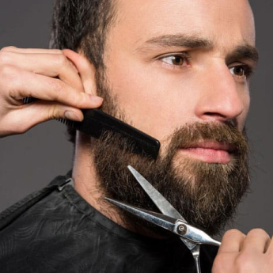
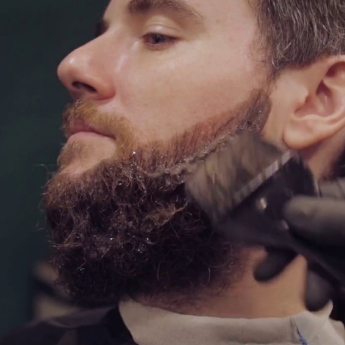

послуги

Стрижка
Процес чоловічої стрижки включає миття голови, сушку і укладання волосся, створення фейду, а також окантовку.

Стрижка бороди
Стрижка бороди включає в себе окантовку контуру бороди небезпечною бритвою з розпарюванням.

Камуфляж
Камуфляж призначений для чоловіків, які бажають приховати видиму сивину на бороді або надати бороді насиченішого кольору.